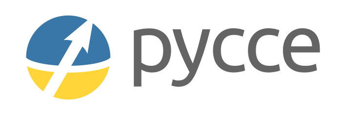

PyCCE: A Python Package for CCE Simulations

PyCCE is an open source Python library to simulate the dynamics of a spin qubit interacting with a spin bath using the cluster-correlation expansion (CCE) method.
PyCCE supports parallelization through mpi4py, and high-throughput workflows through aiida-pycce.
Major updates
PyCCE 1.1
PyCCE 1.1 has been released! Main changes include:
- Implementation of the master equation-based CCE approaches.
Check out Dissipative spin bath for examples of the usage.
Various optimization and bugfixes.
PyCCE 1.0
PyCCE 1.0 has been released! Main changes include:
- Support for several central spins with the new class
CenterArray! Check out a tutorial Multiple central spins on how to use the new class to study the decoherence of the hybrid qubit or entanglement of dipolarly coupled qubits.
- Support for several central spins with the new class
- Direct definition of the bath spin states with
BathArray.stateattribute. Check out the updated tutorial NV Center in Diamond to see how one can use this functionality to study the effect of spin polarization on Hahn-echo signal.
- Direct definition of the bath spin states with
- Expanded the control over pulse sequences.
See documentation for
Pulseclass in Running the Simulations for details.
- EXPERIMENTAL FEATURE. Added ability to define your own single particle Hamiltonian.
See
BathArray.handCenter.hin Spin Bath and Central Spins respectively for further details.
Significant overhaul of computational expensive parts of the code with Numba. This introduces a performance overhead to the first run, but after compilation it should run observably faster.
Various bug fixes and QoL changes.
This is a major update. If you find any issues ot bugs, please let us know as soon as possible!
Installation
The recommended way to install PyCCE is to use pip:
$ pip install pycce
Otherwise you can install PyCCE directly using the source code. First clone the repository:
$ git clone https://github.com/MICCoMpy/PyCCE.git
Then, execute pip in the folder containing pyproject.toml:
$ pip install .
Requirements
The following modules are required to run PyCCE.
PyCCE inherently supports parallelization with the mpi4py package, which requires the installation of MPI. mpi4py is not required for serial calculations.
How to cite
If you make use of PyCCE in a scientific publication, please cite the following paper:
Mykyta Onizhuk and Giulia Galli. “PyCCE: A Python Package for Cluster Correlation Expansion Simulations of Spin Qubit Dynamic” Adv. Theory Simul. 2021, 2100254 https://onlinelibrary.wiley.com/doi/10.1002/adts.202100254